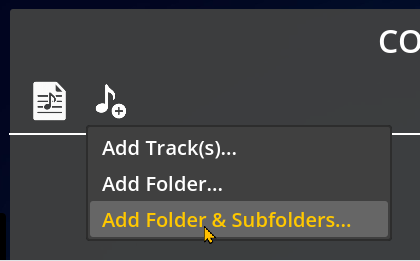
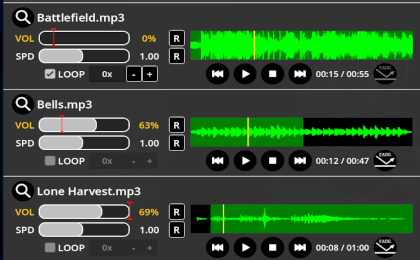
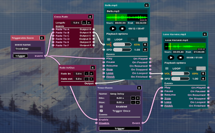

Unleash your creative potential with powerfull tools
Explore the Power Behind the App.
Importing
Use your personal library of tracks to create soundscapes that match your unique style.

Track Cutting
Cue the exact moment you want in any track, effortlessly.

Multi-Track Mixing
Blend ambience, music, and sound effects together for cinematic immersion.

Automation
Automate fades, transitions, and even pitch/tempo changes with the powerful editor.

Event-Based Control
Trigger music or effects instantly with custom events.

Cross-Platform
Build on desktop, perform on mobile. Your projects travel with you.

Offline Friendly
Works at the table, even without internet.

One License to Rule Them All
Buy once, use on multiple devices. Simple and fair.

No Subscriptions
Own the app outright. No ongoing fees, no strings attached.